Plots the ggplot2 equivalent of fixest::iplot(). Many of the
arguments are the same. As per the latter's description:
This function plots the results of estimations (coefficients and confidence
intervals). The function restricts the output to variables created with
i, either interactions with factors or raw factors.
Arguments
- object
A model object of class
fixestorfixest_multi, or a list thereof.- geom_style
Character string. One of
c('pointrange', 'errorbar', 'ribbon')describing the preferred geometric representation of the coefficients.- multi_style
Character string. One of
c('dodge', 'facet'), defining how multi-model objects should be presented.- aggr_eff
A character string indicating whether the aggregated mean post- (and/or pre-) treatment effect should be plotted alongside the individual period effects. Should be one of "none" (the default), "post", "pre", or "both".
- aggr_eff.par
List. Parameters of the aggregated treatment effect line, if plotted. The default values are
col = 'gray50',lwd = 1,lty = 1.- facet_args
A list of arguments passed down to
ggplot::fact_wrap(). E.g.facet_args = list(ncol = 2, scales = 'free_y'). Only used ifmulti_style = 'facet'.- theme
ggplot2 theme. Defaults to
theme_linedraw()with some minor adjustments, such as centered plot title. Can also be defined on an existing ggiplot object to redefine theme elements. See examples.- ...
Arguments passed down, or equivalent, to the corresponding
fixest::iplot()arguments. Note that some of these require list objects. Currently used are:main,xlab, andylabfor setting the plot title, x- and y-axis labels, respectively.zeroandzero.parfor defining or adjusting the zero line. For example,zero.par = list(col = 'orange').ref.lineandref.line.parfor defining or adjusting the vertical reference line. For example,ref.line.par = list(col = 'red', lty = 4).pt.pchandpt.joinfor overriding the default point estimate shapes and joining them, respectively.colfor manually defining line, point, and ribbon colours.ci_levelfor changing the desired confidence level (default = 0.95). Note that multiple levels are allowed, e.g.ci_level = c(0.8, 0.95).ci.widthfor changing the width of the extremities of the confidence intervals. Only used ifgeom_style = "errorbar"(or if multiple CI levels are requested for the default pointrange style). The default value is 0.2.ci.fill.parfor changing the confidence interval fill. Only used whengeom_style = "ribbon"and currently only affects the alpha (transparency) channel. For example, we can make the CI band lighter withci.fill.par = list(alpha = 0.2)(the default alpha is 0.3).dicta dictionary for overriding coefficient names.
Details
This function generally tries to mimic the functionality and (where
appropriate) arguments of fixest::iplot() as closely as possible.
However, by leveraging the ggplot2 API and infrastructure, it is able to
support some more complex plot arrangements out-of-the-box that would be
more difficult to achieve using the base iplot() alternative.
Examples
# We'll also load fixest to estimate the actual models that we're plottig.
library(fixest)
library(ggiplot)
# These examples borrow from the fixest::iplot() documentation and the
# introductory package vignette.
#
## Example 1: Vanilla TWFE
#
data(base_did)
base_inter = base_did
est_did = feols(y ~ x1 + i(period, treat, 5) | id+period, base_inter)
ggiplot(est_did)
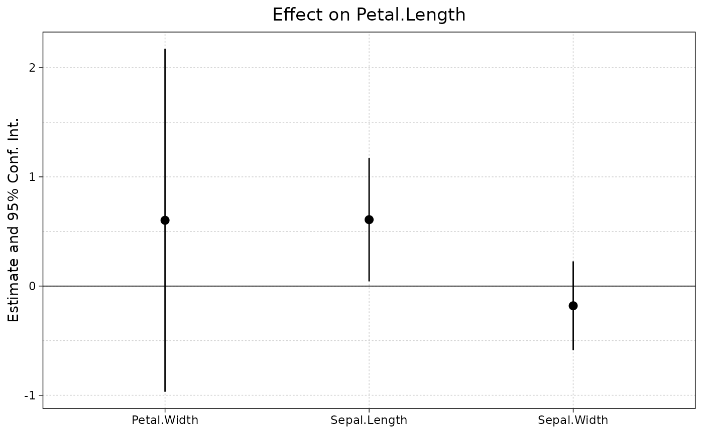
# Comparison with iplot defaults
iplot(est_did)
ggiplot(est_did, geom = 'errorbar') # closer iplot original
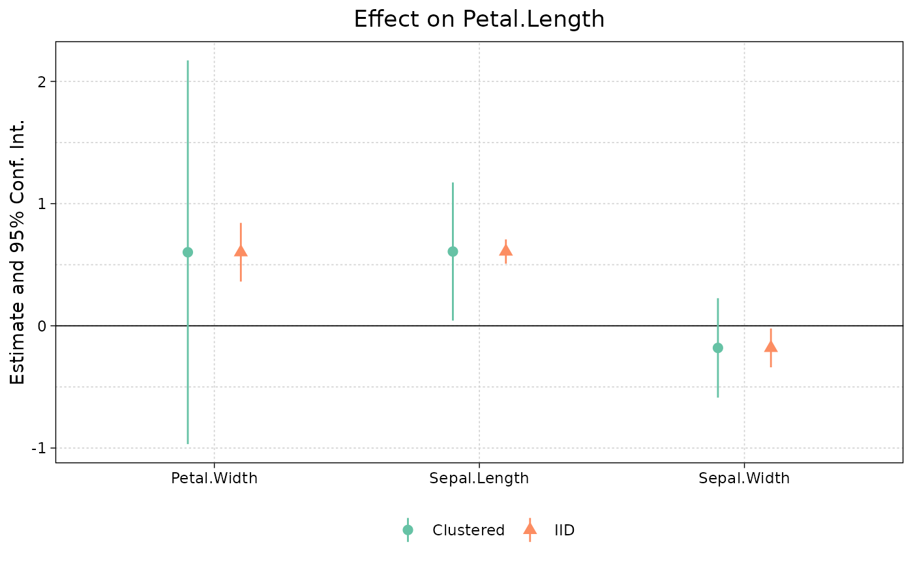
# Many of the arguments work the same as in iplot()
iplot(est_did, pt.join = TRUE)
ggiplot(est_did, pt.join = TRUE, geom_style = 'errorbar')
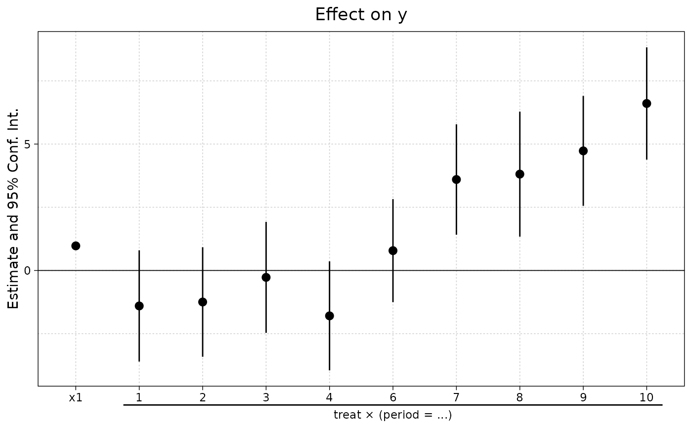
# Plots can be customized and tweaked easily
ggiplot(est_did, geom_style = 'ribbon')
ggiplot(est_did, geom_style = 'ribbon', col = 'orange')
#> Scale for colour is already present.
#> Adding another scale for colour, which will replace the existing scale.
# Unlike base iplot, multiple confidence interval levels are supported
ggiplot(est_did, ci_level = c(.8, .95))
# Another new feature (i.e. unsupported in base iplot) is adding aggregated
# post- and/or pre-treatment effects to your plots. Here's an example that
# builds on the previous plot, by adding the mean post-treatment effect.
ggiplot(est_did, ci_level = c(.8, .95),
aggr_eff = "post", aggr_eff.par = list(col="orange")) # default is grey
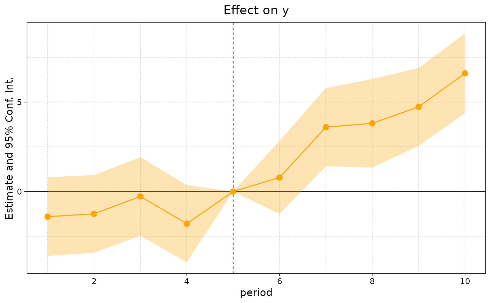
#
# Example 2: Multiple estimation (i)
#
# We'll demonstrate using the staggered treatment example from the
# introductory fixest vignette.
data(base_stagg)
est_twfe = feols(y ~ x1 + i(time_to_treatment, treated, ref = c(-1, -1000)) | id + year, base_stagg)
est_sa20 = feols(y ~ x1 + sunab(year_treated, year) | id + year, base_stagg)
ggiplot(list('TWFE' = est_twfe, 'Sun & Abraham (2020)' = est_sa20),
main = 'Staggered treatment', ref.line = -1, pt.join = TRUE)
# If you don't like the presentation of 'dodged' models in a single frame,
# then it easy to facet them instead using multi_style = 'facet'.
ggiplot(list('TWFE' = est_twfe, 'Sun & Abraham (2020)' = est_sa20),
main = 'Staggered treatment', ref.line = -1, pt.join = TRUE,
multi_style = 'facet')
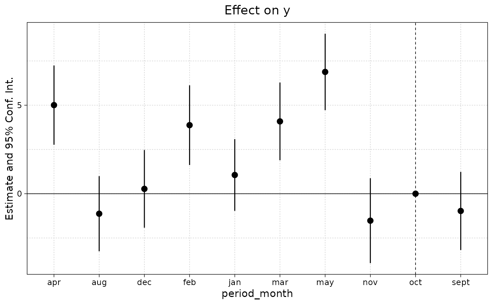
#
# Example 3: Multiple estimation (ii)
#
# An area where ggiplot shines is in complex multiple estimation cases, such
# as lists of fixest_multi objects. To illustrate, let's add a split variable
# (group) to our staggered dataset.
base_stagg_grp = base_stagg
base_stagg_grp$grp = ifelse(base_stagg_grp$id %% 2 == 0, 'Evens', 'Odds')
# Now re-run our two regressions from earlier, but splitting the sample to
# generate fixest_multi objects.
est_twfe_grp = feols(y ~ x1 + i(time_to_treatment, treated, ref = c(-1, -1000)) |
id + year, base_stagg_grp, split = ~ grp)
est_sa20_grp = feols(y ~ x1 + sunab(year_treated, year) |
id + year, base_stagg_grp, split = ~ grp)
# ggiplot combines with list of multi-estimation objects without a problem...
ggiplot(list('TWFE' = est_twfe_grp, 'Sun & Abraham (2020)' = est_sa20_grp),
ref.line = -1, main = 'Staggered treatment: Split multi-sample')
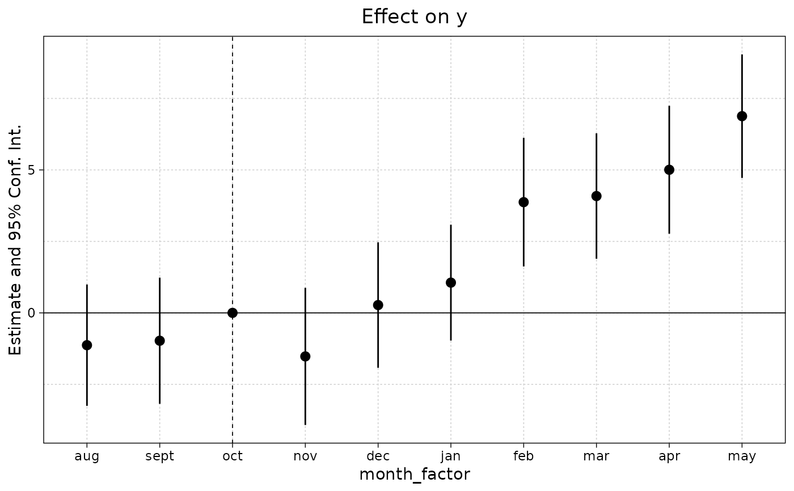
# ... but is even better when we use faceting instead of dodged errorbars.
# Let's use this an opportunity to construct a fancy plot that invokes some
# additional arguments and ggplot theming.
ggiplot(list('TWFE' = est_twfe_grp, 'Sun & Abraham (2020)' = est_sa20_grp),
ref.line = -1,
main = 'Staggered treatment: Split multi-sample',
xlab = 'Time to treatment',
multi_style = 'facet',
geom_style = 'ribbon',
theme = theme_minimal() +
theme(text = element_text(family = 'HersheySans'),
plot.title = element_text(hjust = 0.5),
legend.position = 'none'))
#
# Aside on theming and scale adjustments
#
# Setting the theme inside the `ggiplot()` call is optional and not strictly
# necessary, since the ggplot2 API allows programmatic updating of existing
# plots. E.g.
last_plot() + labs(caption = 'Note: Super fancy plot brought to you by ggiplot')
 last_plot() + theme_void() + scale_colour_brewer(palette = 'Set1')
#> Scale for colour is already present.
#> Adding another scale for colour, which will replace the existing scale.
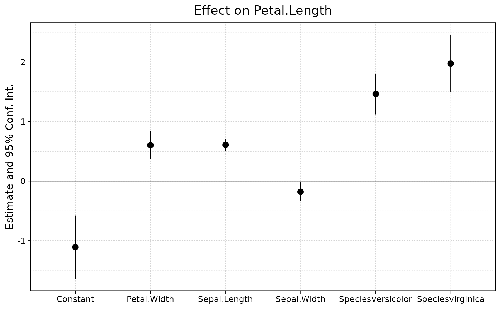
# etc.
#
# Aside on dictionaries
#
# Dictionaries work similarly to iplot. Simple example:
base_inter$letter = letters[base_inter$period]
est_letters = feols(y ~ x1 + i(letter, treat, 'e') | id+letter, base_inter)
ggiplot(est_letters) # No dictionary
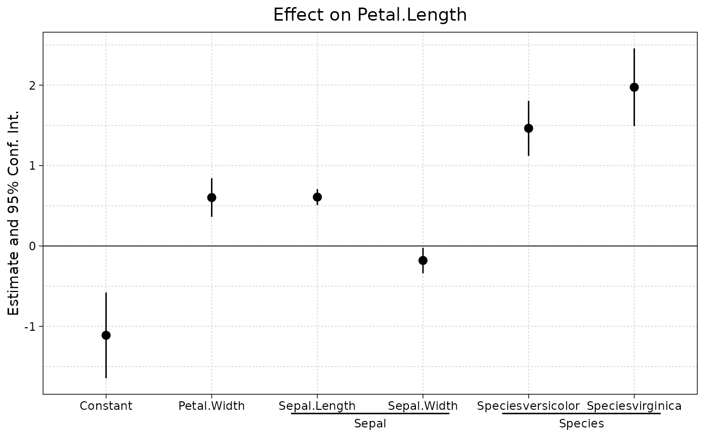
# Dictionary for capitalising the letters
dict = LETTERS[1:10]; names(dict) = letters[1:10]
# You can either set the dictionary directly in the plot call.
ggiplot(est_letters, dict=dict)
# Or, set it globally using the setFixest_dict macro
setFixest_dict(dict)
ggiplot(est_letters)
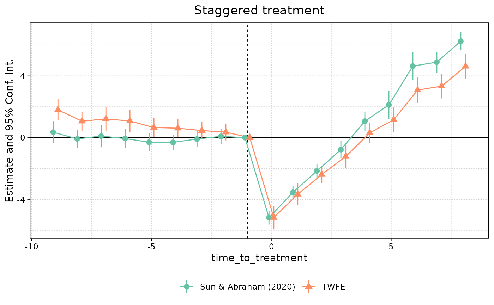
setFixest_dict() # reset
last_plot() + theme_void() + scale_colour_brewer(palette = 'Set1')
#> Scale for colour is already present.
#> Adding another scale for colour, which will replace the existing scale.
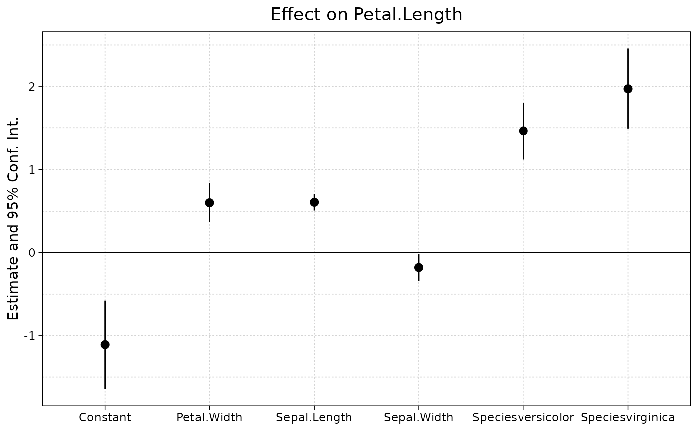
# etc.
#
# Aside on dictionaries
#
# Dictionaries work similarly to iplot. Simple example:
base_inter$letter = letters[base_inter$period]
est_letters = feols(y ~ x1 + i(letter, treat, 'e') | id+letter, base_inter)
ggiplot(est_letters) # No dictionary
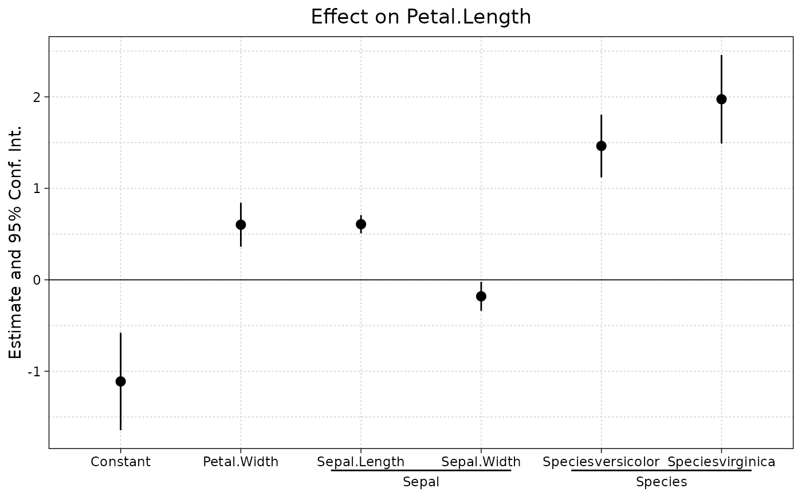
# Dictionary for capitalising the letters
dict = LETTERS[1:10]; names(dict) = letters[1:10]
# You can either set the dictionary directly in the plot call.
ggiplot(est_letters, dict=dict)
# Or, set it globally using the setFixest_dict macro
setFixest_dict(dict)
ggiplot(est_letters)
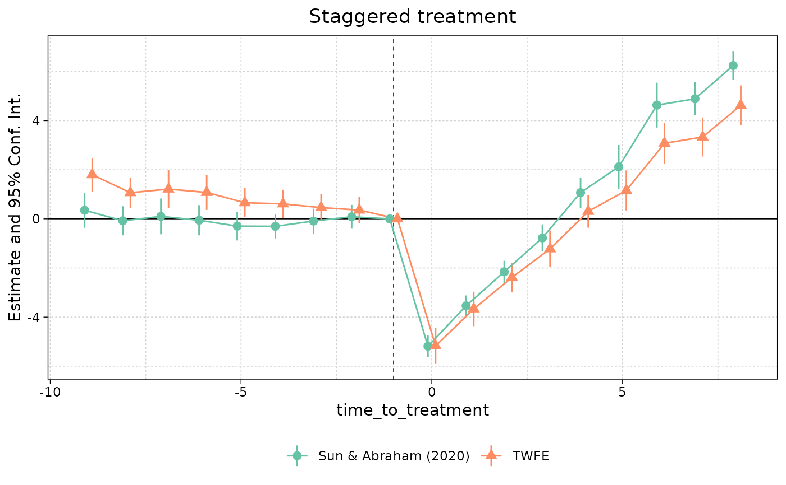
setFixest_dict() # reset